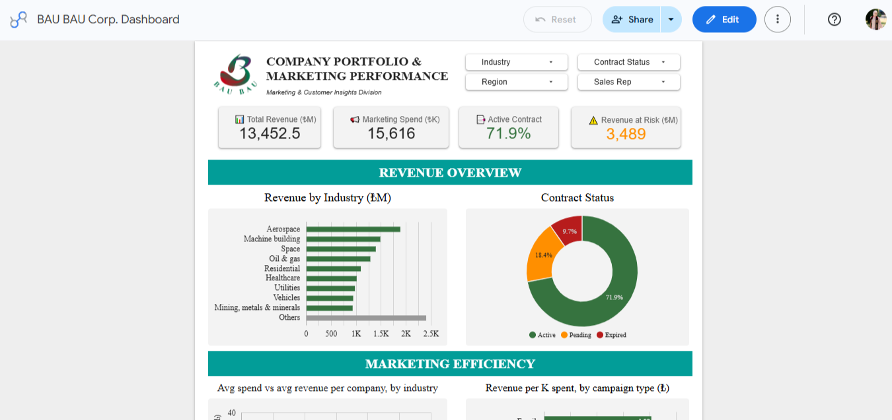

Dashboard
Company Portfolio & Marketing Performance Dashboard
Analisis company portfolio dan marketing performance menggunakan Google Looker Studio.
Lihat Detail →Dashboard
Dashboard interaktif yang menyajikan perkembangan nilai ekspor Indonesia berdasarkan negara tujuan, kawasan, dan periode waktu.
Project Overview
Indonesia merupakan salah satu negara dengan aktivitas ekspor yang terus berkembang dari tahun ke tahun. Data ekspor tersedia dalam jumlah besar, namun masih sulit dipahami apabila hanya disajikan dalam bentuk tabel. Oleh karena itu, dashboard ini dibuat untuk menyajikan informasi ekspor secara visual sehingga pola perdagangan dapat dianalisis dengan lebih mudah.
Dashboard ini bertujuan untuk menganalisis perkembangan nilai ekspor Indonesia, membandingkan kontribusi negara tujuan, mengidentifikasi kawasan dengan nilai ekspor terbesar serta membantu memperoleh insight melalui visualisasi interaktif.
Dataset
Data Preparation
Dashboard Preview
Insights
Skills & Tools
Related Projects
Tertarik melihat project lainnya? Jelajahi seluruh portofolio data analytics, riset, dan visual communication saya.
← Kembali ke Portfolio